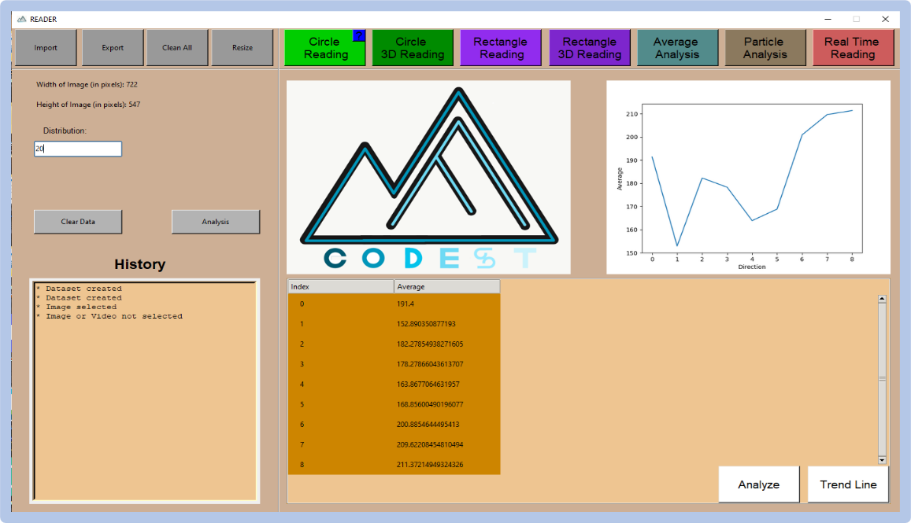

Sesli asistan, kullanıcının verdiği komutları (müzik açma, video oynatma vb.) anlayıp bu komutlara bağlı belli başlı görevleri yerine getirmeye çalışan bir kişisel yardımcıdır.
Teknolojinin gelişmesiyle birlikte bilgisayarlarımızın işlem güçleri hızlı bir oranda artmaya başladı. Bilgisayarlarımız güçlendikçe de yapabildiğimiz şeylerin sayısı da ciddi oranda artmış oldu. Bu artışlarla birlikte insanların aklına peki biz bilgisayarla yapılabilecek bu görevleri bir başka uygulamaya yaptırabilir miyiz sorusu gelmeye başladı. Evet yaptırabiliriz. Sesli veya yazılı komutlarla çalışan bu yardımcı uygulamalara bugün asistanlar denmekte. Bu asistanlar, kullanıcının verdiği komutlar sayesinde binlerce müziği oynatmaktan, internetteki bir yemek tarifini açmaya, spor haberlerinden, hava durumunu öğrenmeye kadar birçok görevi bizim yerimize çok kısa bir sürede yapabilmektedirler. Bu gçrevleri yapmaları için onlara sadece seslenmeniz bile yeterli.
İçerisindeki yapay zeka sayesinde, verdiğimiz komutlardan neler yapmak istediğimizi öğrenecek ve cevabını bize hızlı bir şekilde iletebilecek. En sevdiğimiz müzikleri bizim için öğrenecek ve istediğimiz zaman bize o müzikleri kendisi oynatabilecek. İçerisinde aynı zamanda bulunacak olan görüntü işleme ve ses tanıma algoritması sayesinde sizden başkası sizin haberiniz olmadan sesli asistanınızı kullanamıyor olacak ve tabi ki içerisindeki onlarca komut sayesinde hayatınız çok daha kolay olacak.